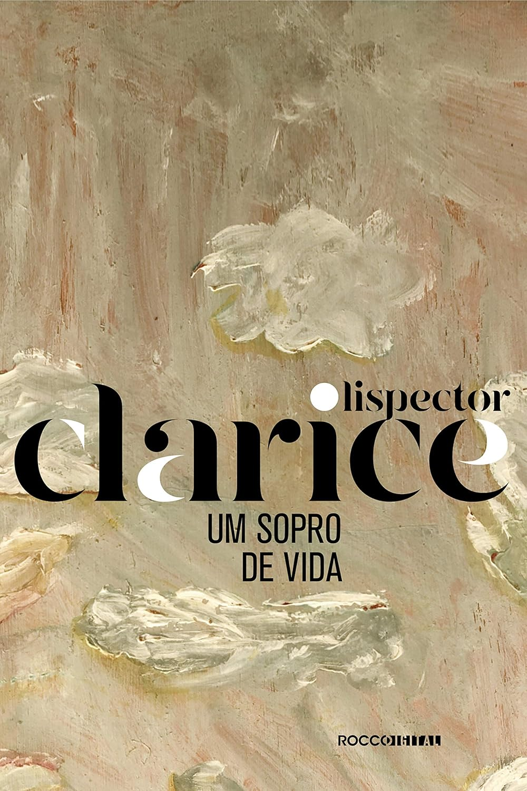

Livro favorito ♡

Um Sopro de Vida é o último romance de Clarice Lispector, publicado postumamente, que explora a relação entre autor e personagem e a busca pela essência da vida.
Conheça mais sobre Clarice Lispector . . .
Esta página reúne meus livros lidos, minhas próximas leituras e algumas resenhas.
A leitura é uma forma de explorar novos mundos e ideias, e este espaço acompanha essa jornada.
"Eu tenho amêndoas em mim. Assim como você. Assim como quem você ama e quem odeia. Mas ninguém consegue senti-las.
Você só sabe que elas existem. Esta história é, em resumo, sobre um monstro encontrando outro monstro. Um dos monstros sou eu."
"Eu acabarei onde preciso acabar, não importa o que eu faça."

Um Sopro de Vida é o último romance de Clarice Lispector, publicado postumamente, que explora a relação entre autor e personagem e a busca pela essência da vida.
Conheça mais sobre Clarice Lispector . . .